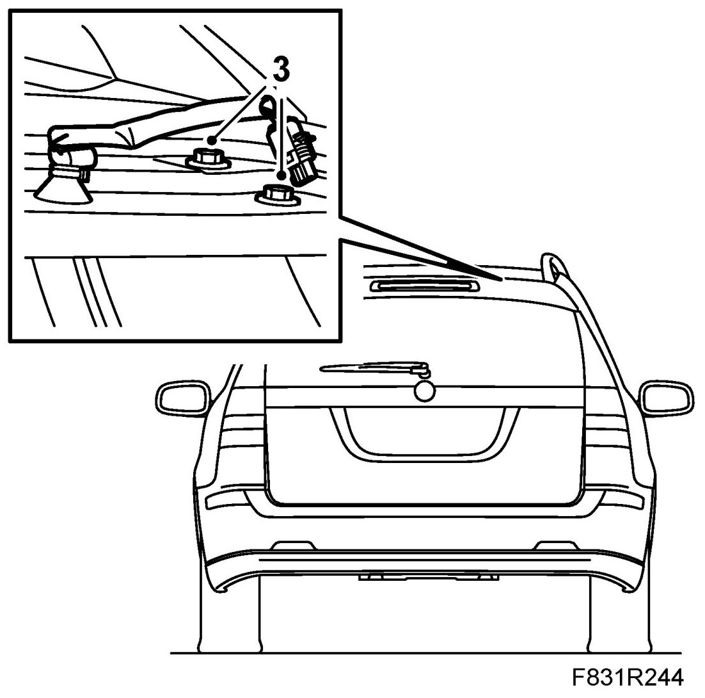
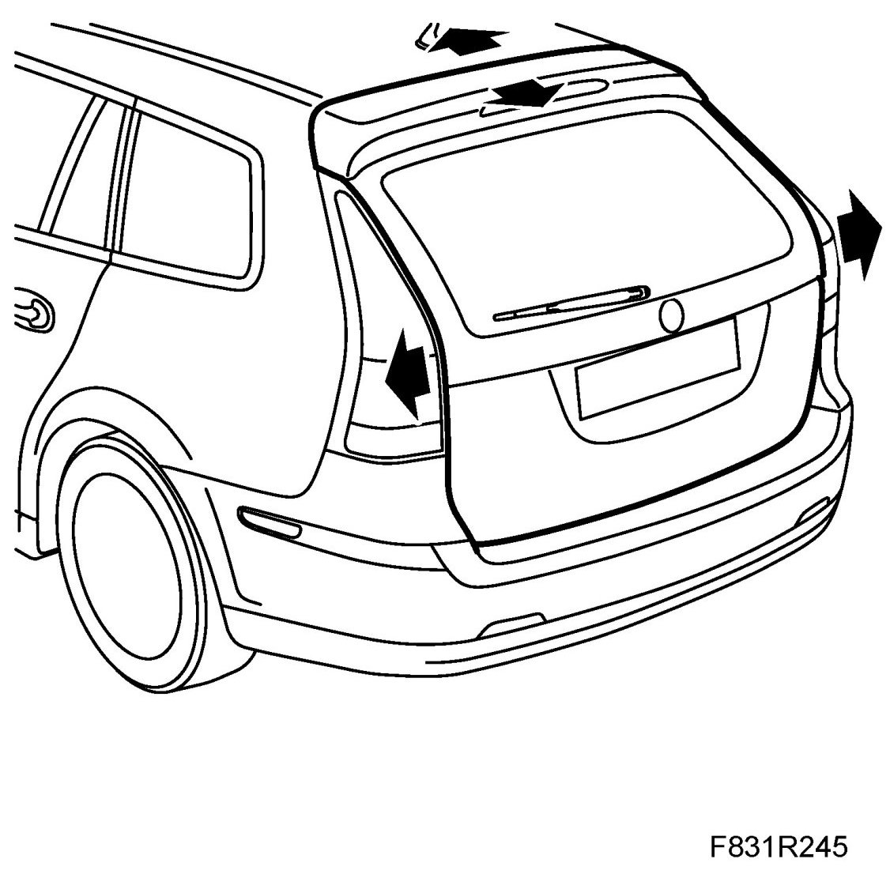
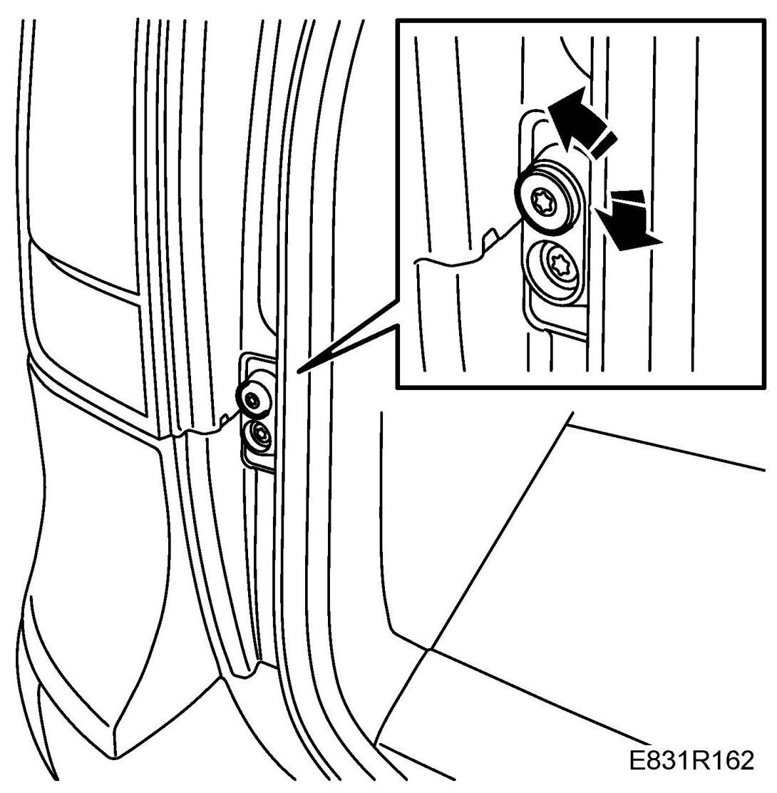
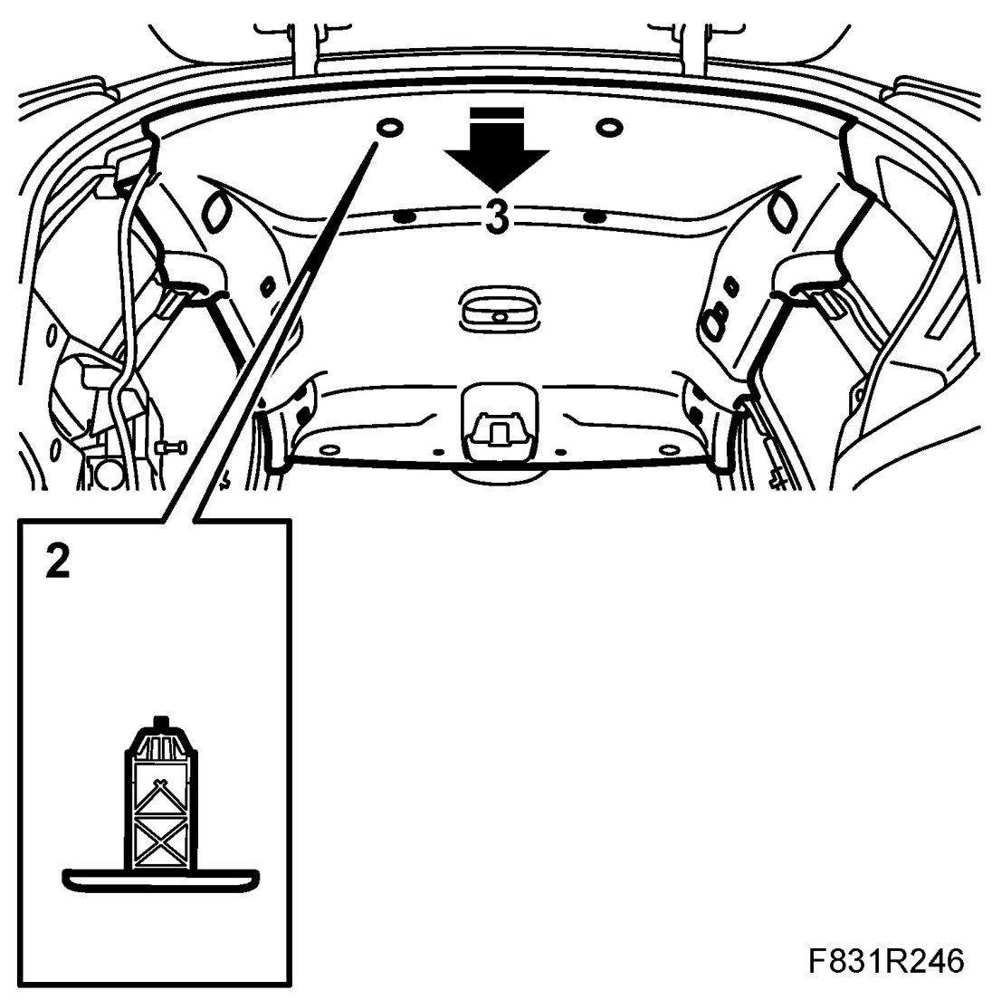
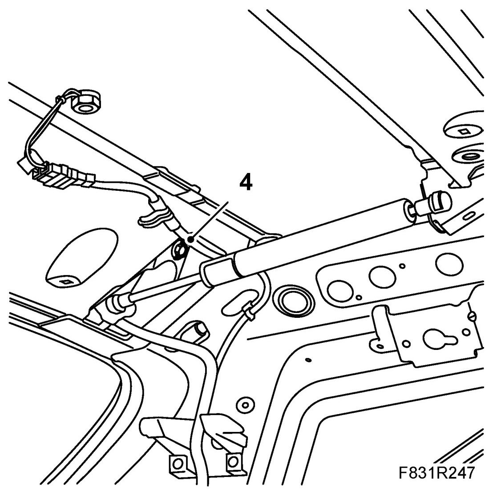
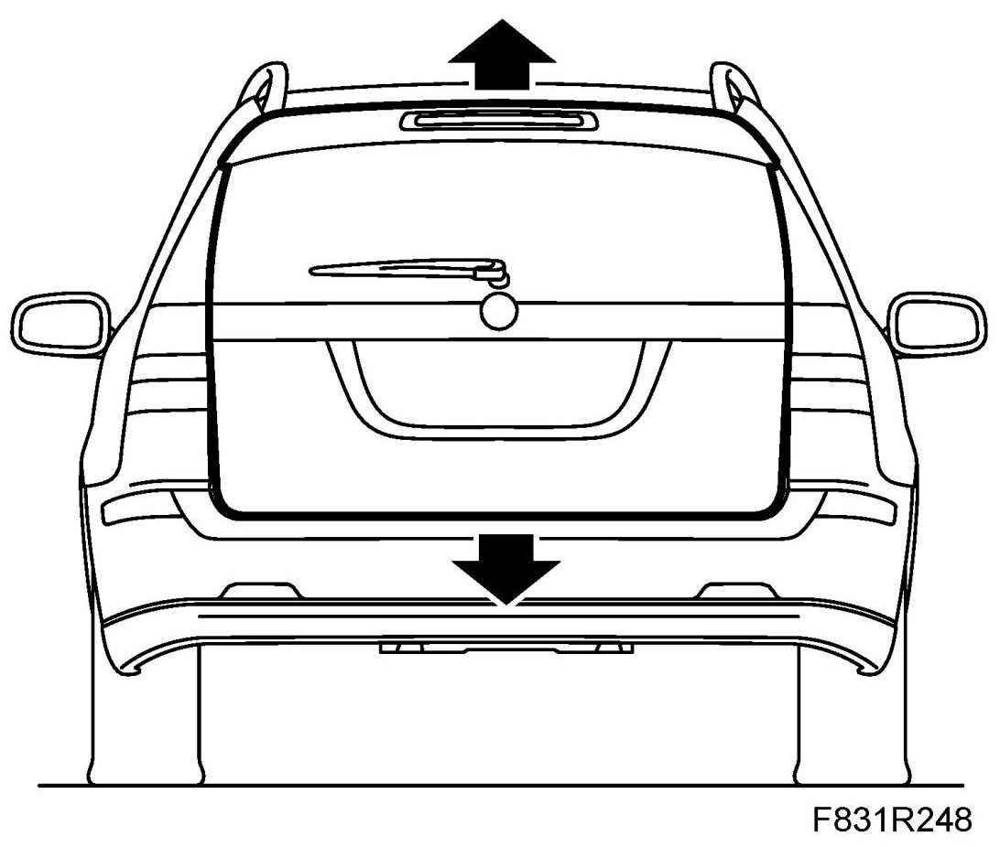

Tailgate 5D, Adjustment
Tailgate 5D, Adjustment
Adjustment of tailgate forward, backward and sideways
1. Remove Window cover plates, tailgate, 5D.
2. Remove Upper spoiler, 5D.
3. Undo the bolts holding the tailgate to the hinges.

4. Adjust up (backward) or down (forward).

5. Adjust sideways.
6. Tighten the bolts. Check the fit of the tailgate.
7. Fit Upper spoiler, 5D.
8. Fit Window cover plates, tailgate, 5D.
Adjustment of tailgate's bottom edge forward, rearward
1. Open the tailgate.
2. Adjust with a screwdriver.

Adjustment of tailgate up and down
1. Open the tailgate.
2. Remove the rear headlining clips by turning them 90�.

3. Carefully bend down the headlining.
4. Undo the bolts on each hinge (one bolt is on the inside).

5. Adjust by raising or lowering the tailgate.

6. Tighten the tailgate.
7. Bend the headlining back in place.
8. Fit the rear headlining clips.
9. Check the fit.